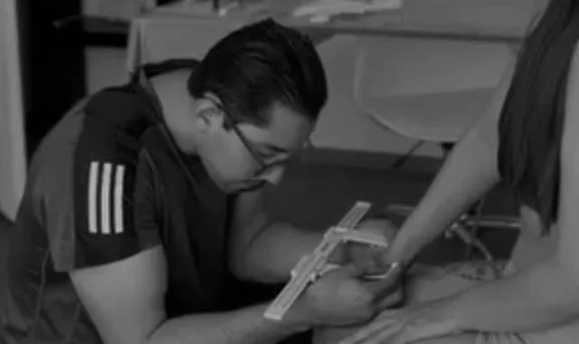
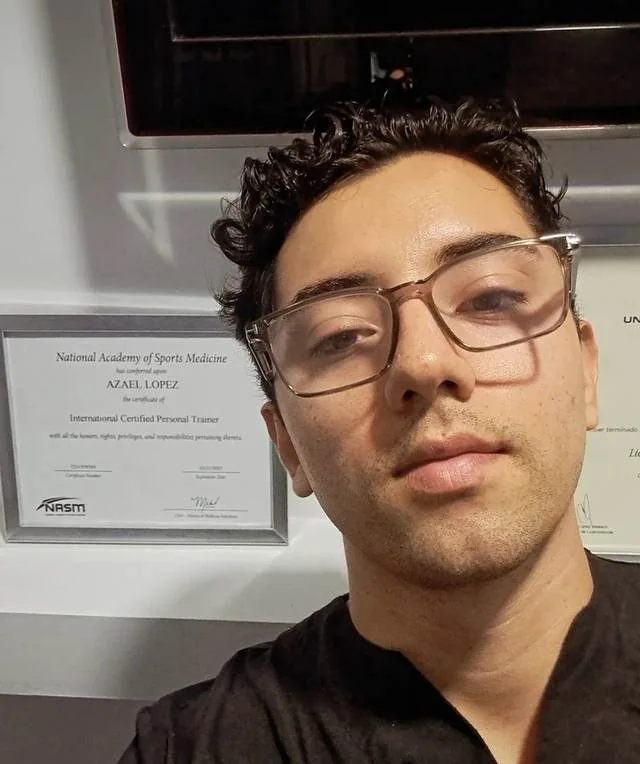
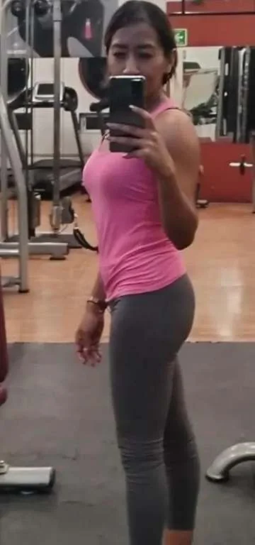
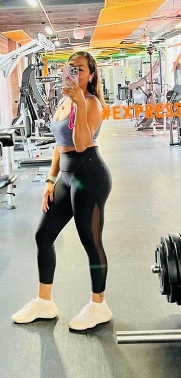
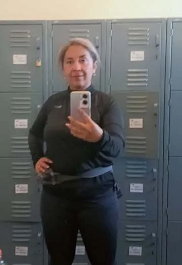
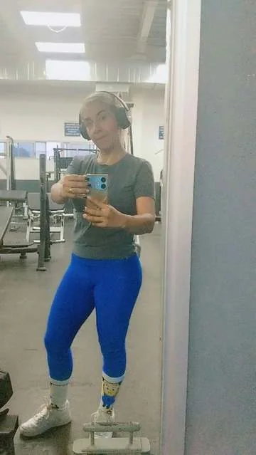
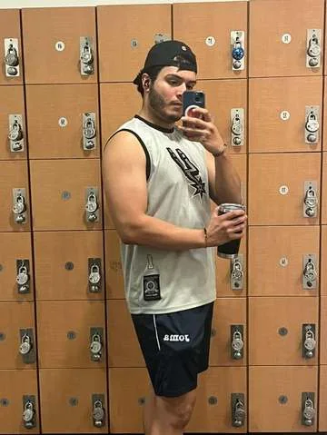
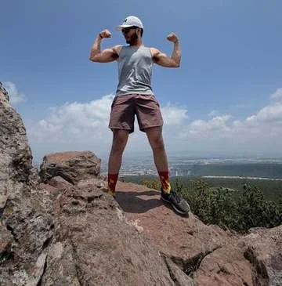

Nutrición · Hipertrofia · Rendimiento
Entrena con estructura.
Vive en equilibrio.
Planes de nutrición y entrenamiento que unen la disciplina de la hipertrofia y el rendimiento deportivo con una vida diaria sostenible — sin extremos, sin dietas de moda.

Método
Tres pilares, un mismo método
No es solo levantar más peso ni solo comer “sano” — es que ambos trabajen juntos, medibles y sostenibles en el tiempo.
01 — Vida
Nutrición con propósito
Planes de alimentación ajustados a tu rutina real, tus horarios y tus gustos — no una dieta genérica de plantilla.
02 — Fuerza
Hipertrofia inteligente
Entrenamiento progresivo enfocado en ganancia de masa muscular real, con seguimiento técnico continuo.
03 — Rendimiento
Rendimiento deportivo
Periodización específica para tu disciplina, pensada para que rindas mejor, no solo para verte bien.

Sobre mí
Soy Azael López Corbella y trabajo los dos pilares que casi nunca se hablan entre sí.
La nutrición y el entrenamiento suelen ir por caminos separados: un nutriólogo te da un plan que no cabe en tu semana de gimnasio, y un entrenador te pide un rendimiento que tu comida no sostiene. Corbella Balance existe para cerrar esa brecha.
Soy licenciado en Nutrición y maestro en Nutrición Deportiva, antropometrista ISAK y entrenador certificado por NASM. Trabajo con mediciones reales, revisiones cada dos semanas y ajustes que respetan tus horarios, tu presupuesto y lo que de verdad te gusta comer.
Programas
Programas de transformación
Acompañamiento completo por 3, 6 o 12 meses. Nutrición y entrenamiento en un solo plan.
Programa · 3 meses
Programa Elite 3 Meses
Un trimestre completo de nutrición y entrenamiento. El punto de partida para ver cambios reales y medibles.
Programa · 6 meses
Programa Elite 6 Meses
Dos trimestres encadenados: construcción y consolidación. Aquí es donde el cambio deja de ser temporal.
Programa · 12 meses
Programa Elite 12 Meses
Un año de acompañamiento por temporadas. El mejor precio por mes y el resultado más sostenible.
Testimonios
Lo que dicen quienes ya viven en balance

Antes
Después“Empecé sin plan de alimentación, solo con una rutina básica — cuando sumamos la nutrición, todo cambió. Fue un cambio físico radical: aprendí las bases de la alimentación y la ejecución de los ejercicios, y hoy no dejo el gym ni lo voy a dejar.”— Iracema E., nutrición y entrenamiento · 1 año

Antes
Después“No solo bajé de peso — volví a talla M, una talla que no usaba desde hacía 8 años. Aprendí a entrenar con técnica y a comer sano en mi día a día, y recuperé una seguridad en mí misma que no esperaba encontrar en el proceso.”— Edith F., pérdida de peso y hábitos · 1 año+

Antes
Después“Mi objetivo era recomposición corporal, y eso fue justo lo que pasó: el músculo se quedó y la grasa se fue, sobre todo en cachetes y torso. Lo que más me ayudó fue la diversidad del plan de alimentación — casi no tuve restricciones.”— Jesús S., recomposición corporal · 6 meses
¿Listo para encontrar tu balance?
Agenda una evaluación inicial y armamos juntos tu plan de nutrición y entrenamiento.
Agenda tu evaluación